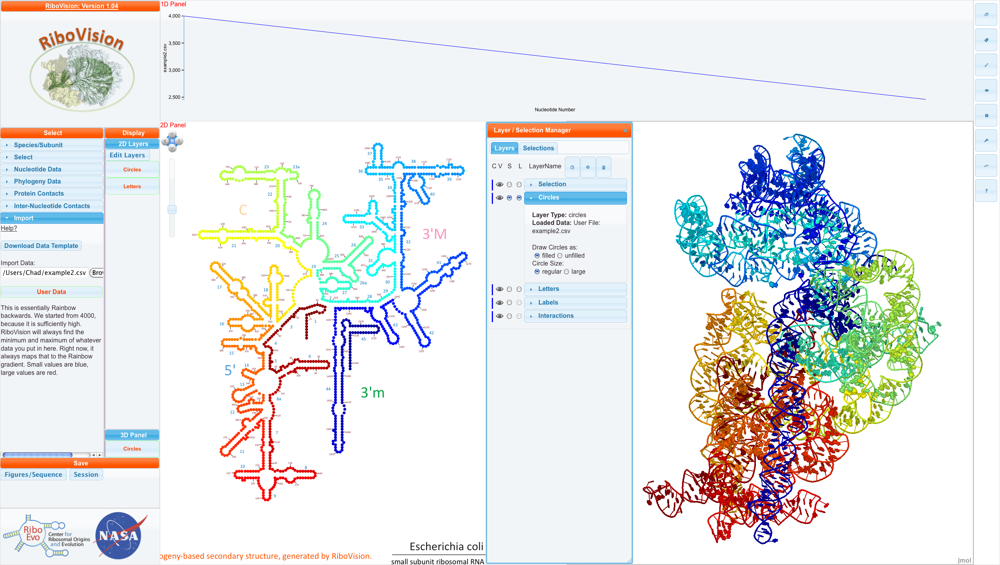

What we call "Color by Data" is that the user (you) have some data which you have converted into a numerical format. You may have decided this "by hand", or you may have adapted your computer programs to output to our input format. RiboVision will determine the minimum and maximum of your data, and map everything to one of 64 colors in our Rainbow gradient. Small values are mapped to blue, and large values are mapped to red. Alternatively, you can provide your own gradient. See RiboVision Coloring for details on colors and gradients.
For this example, we have decided to color the entire Small Subunit from red to blue. This is essentially backwards rainbow. We start from 4000 arbitrarily, and count down by one for each nucleotide. In addition, we will set a column called "DataDescription". In the first row, we write a description of the data. It can be as detailed as you like.
| resNum | DataCol | DataDescription |
|---|---|---|
| 16S:1 | 4000 | "This is essentially..." |
| 16S:2 | 3999 | |
| 16S:1274 | 2727 | |
| 16S:1542 | 2459 |
Here is the csv file for this example. Below, is this file mapped onto E. coli SSU Phylogeny Structure. 
You can see our DataDescription in the "Main Menu" and see that Example2.csv has been loaded into the Circles layer as filled and regular circles. NavLine contains a graph of DataCol, which starts from 4000, and goes down linearly to about 2500.